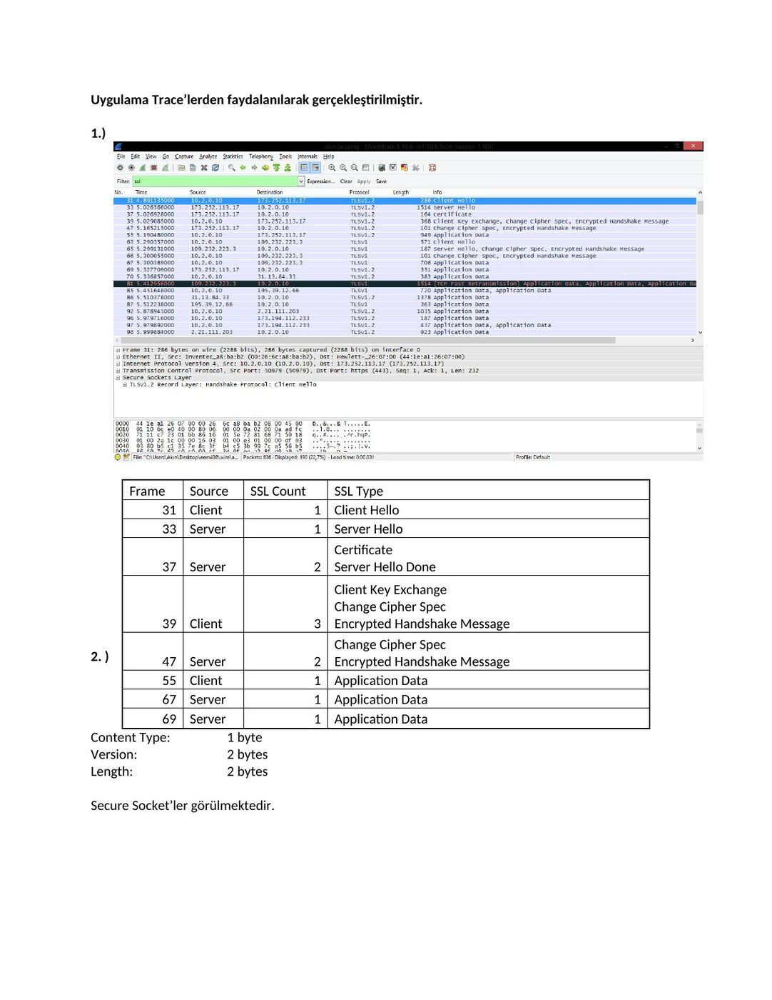
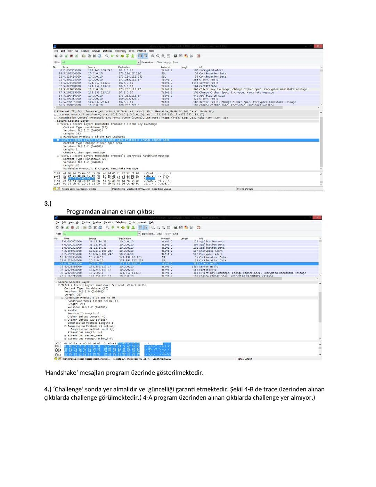
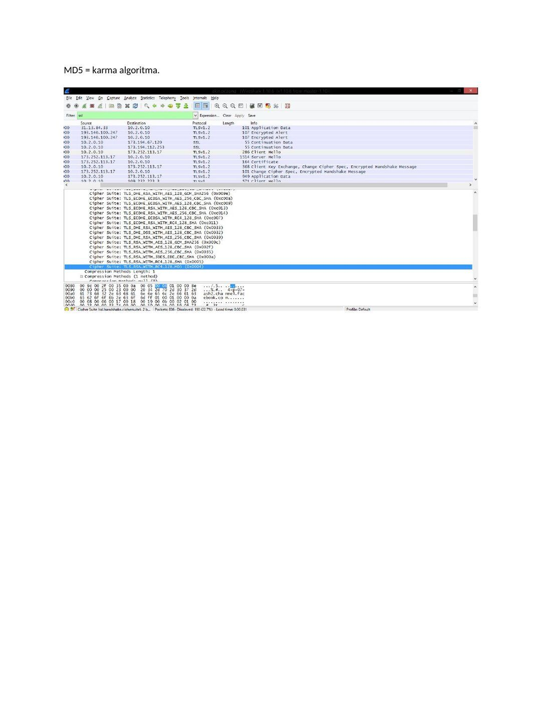
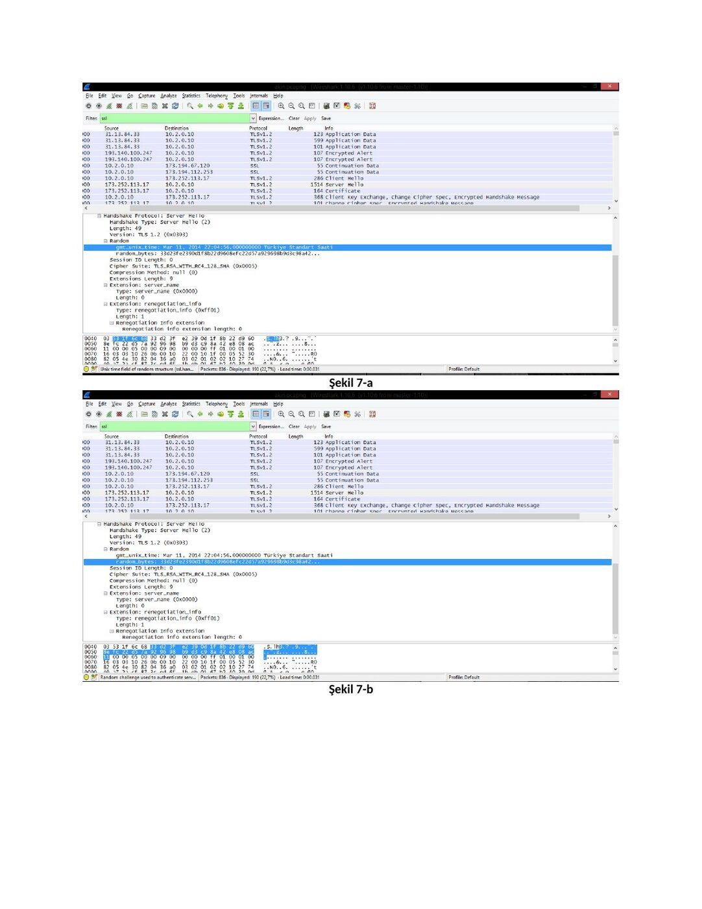
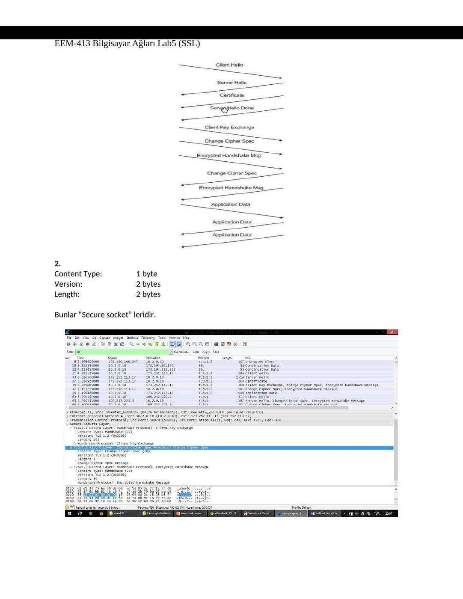
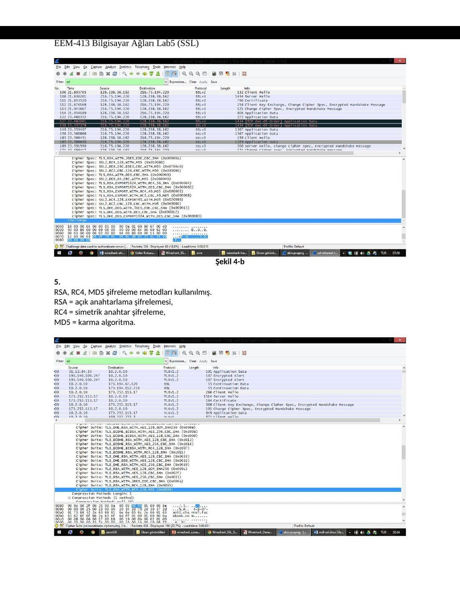
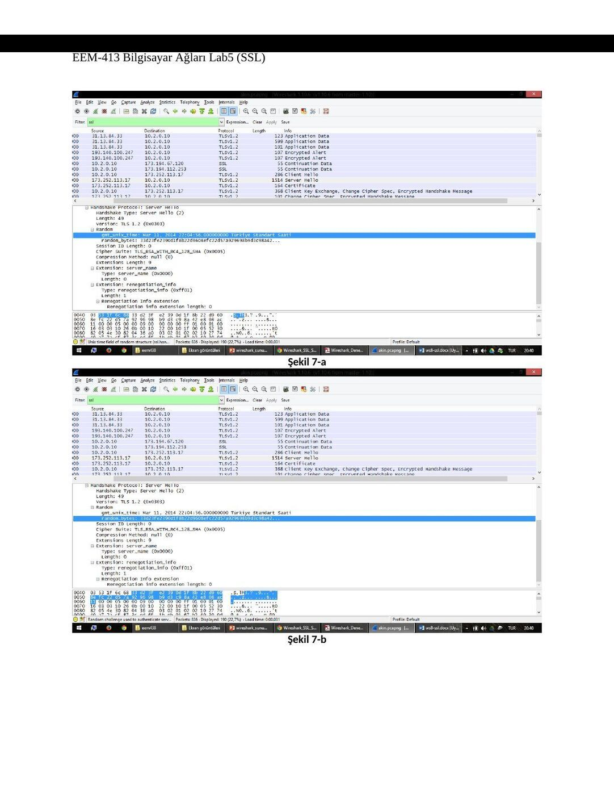

· EEM413
EEM413 Bilgisayar Ağları: SSL Laboratuvarı: El Sıkışma ve Kayıtlar
EEM413 – Bilgisayar Ağları · 17.12.2014 · 18.10.2026
Ders arşivindeki öğrenci laboratuvar raporlarıdır; öğrenci adları, numaraları ve kimlik bilgileri çıkarılmıştır. Belge üzerindeki tarih bulunmadığında kaynak dosyanın oluşturulma ya da son değiştirilme tarihi kullanılmıştır. Belgelerin arşiv için hazırlanmış PDF kopyaları yazının sonunda indirilebilir.
SSL raporu A
EEM 413 BİLGİSAYAR AĞLARI DENEY-5 SSL
Uygulama Trace’lerden faydalanılarak gerçekleştirilmiştir.
1. )
Frame Source SSL Count SSL Type 31 Client 1 Client Hello 33 Server 1 Server Hello Certificate 37 Server 2 Server Hello Done Client Key Exchange Change Cipher Spec 39 Client 3 Encrypted Handshake Message Change Cipher Spec
2. ) 47 Server 2 Encrypted Handshake Message 55 Client 1 Application Data 67 Server 1 Application Data 69 Server 1 Application Data Content Type: 1 byte Version: 2 bytes Length: 2 bytes
Secure Socket’ler görülmektedir.
3. ) Programdan alınan ekran çıktısı:
‘Handshake’ mesajları program üzerinde gösterilmektedir.
4. ) ‘Challenge’ sonda yer almalıdır ve güncelliği garanti etmektedir. Şekil 4-B de trace üzerinden alınan çıktılarda challenge görülmektedir.( 4-A program üzerinden alınan çıktılarda challenge yer almıyor.)
Şekil 4-a
Şekil 4-b
5. ) RSA, RC4, MD5 şifreleme metodları kullanılmış. RSA = açık anahtarlama şifrelemesi, RC4 = simetrik anahtar şifreleme,
MD5 = karma algoritma.
6. )
Tek satırda RSA, RC4 ve MD5 şifrelemeleri yapılıyor.
7. )
Kayıt içerisinde yer almaktadır. Byte cinsinden uzunlukları;
- > 1. Satır 4 byte (şekil 7-a)
- > 2. Satır 28 byte (şekil 7-b)
Şekil 7-a
Şekil 7-b
8. ) Kayıt session ID içermektedir. “Remember Me” durumunu gerçekleştirmeye yarıyor. Çıkış yapıldığında şifre ve kullanıcı adını hatırlar.




SSL raporu B
EEM-413 Bilgisayar Ağları Lab5 (SSL)
NOT: Uygulama için http://www.clubboon.com adresinden üyelik alınmış giriş yaplmış ve çıkış yapılmıştır.
1.
Frame Source SSL Count SSL Type 31 Client 1 Client Hello 33 Server 1 Server Hello Certificate 37 Server 2 Server Hello Done Client Key Exchange Change Cipher Spec 39 Client 3 Encrypted Handshake Message Change Cipher Spec 47 Server 2 Encrypted Handshake Message 55 Client 1 Application Data 67 Server 1 Application Data 69 Server 1 Application Data
EEM-413 Bilgisayar Ağları Lab5 (SSL)
2. Content Type: 1 byte Version: 2 bytes Length: 2 bytes
Bunlar “Secure socket” leridir.
EEM-413 Bilgisayar Ağları Lab5 (SSL)
3.
Handshake mesajları ekranda gözüktüğü üzere gösterilmektedir.
4. Sonda yer alması gereken challenge, güncelliği garanti etmektedir. Fakat aldığım çıktılarda (şekil 4-a) yer almamaktadır. Bu yüzden olması gereken resmi (şekil 4-b) verilen örnek trace üzerinden koymuş bulunmaktayım.
Şekil 4-a
EEM-413 Bilgisayar Ağları Lab5 (SSL)
Şekil 4-b
5. RSA, RC4, MD5 şifreleme metodları kullanılmış. RSA = açık anahtarlama şifrelemesi, RC4 = simetrik anahtar şifreleme, MD5 = karma algoritma.
EEM-413 Bilgisayar Ağları Lab5 (SSL)
6.
Tek satırda RSA, RC4 ve MD5 şifrelemeleri yapılıyor.
7.
Evet bu random içindeki iki satır yer almaktadır. Aşağıda byte cinsinden değerleri verilmiştir.
- > 1. Satır 4 byte (şekil 7-a)
- > 2. Satır 28 byte (şekil 7-b)
EEM-413 Bilgisayar Ağları Lab5 (SSL)
Şekil 7-a
Şekil 7-b
EEM-413 Bilgisayar Ağları Lab5 (SSL)
8. Evet içeriyor bu “Beni hatırla” durumunu gerçekleştirmeye yarıor. Çıkış yapıldığında şifre ve kullanıcı adını hatırlar.
9.
Ayrı bir başlık altında certificate içermektedir.
EEM-413 Bilgisayar Ağları Lab5 (SSL)
10.
Evet, premaster secret içermektedir. Bu mac adreslerini şifreleme için kullanılmaktadır. 256 byte uzunluğundadır.
11. Sıralı gelen paket mac id ile hep birlikte gönderiyor bir sonraki id de yer alıyor böylece kayıp olmuyor. Sonra gelen paket şifresinde 6 byte yer alıyor. (6 byte = 1 byte mesaj 5 byte header)
EEM-413 Bilgisayar Ağları Lab5 (SSL)
12.
Encrypted Handshake Message -> kendinden önceki hadshake mesajlarını şifreleyerek gönderiyor, bunun amacı garantilemedir.
13. Biri client biri server tarafından Change Cipher Spec record tek mac, encrypted handshake record bütün mac adreslerine göre şifreleyerek gönderiyor.
14. Application data RC4 şifrelemesi kullanılarak başlanmış sonrasında pre-master key ve en sonunda ise challence işlemi yapılarak şifreleme hem server hemde kullanıcı arasında gerçekleşmiştir.
15. Data gönderiminde SSL mesaj alışverişi için TLSv1.2 kullanmaktadır ve bağzı ClientHello mesajında TLSv1 kullanırken bazılarında TLSv1.2 kullanılmıştır.



Not: Belgelerde SSL ve eski TLS sürümlerine ait alanlar anlatılır. Bu kayıtlar dersin işlendiği dönemi yansıtır; anahtar değişimi ve sertifika bilgilerinin her bağlantıda aynı olması beklenmez.